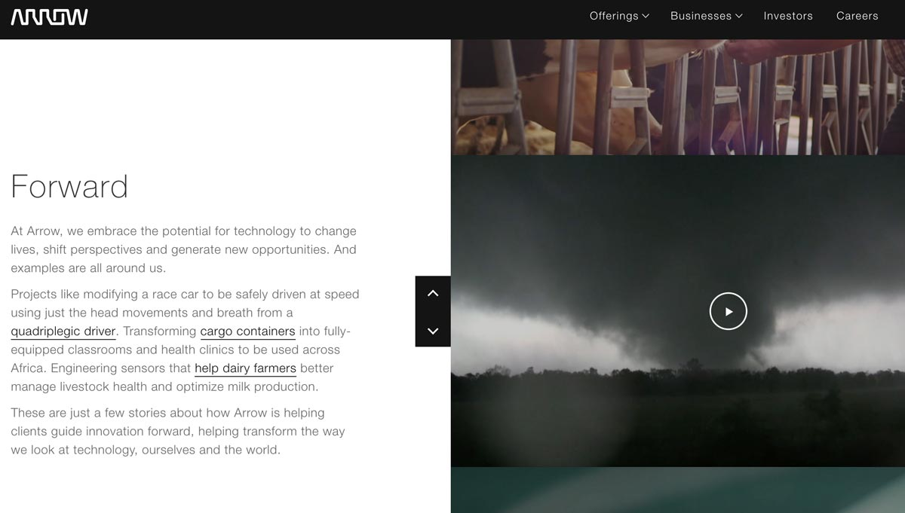
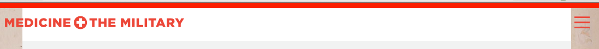

Joseph Saperstein is a Senior Creative Technologist at Karsh Hagan in Denver.
He specializes in full-stack Javascript, responsive development, and animations that enhance the visitor's experience.
Before web development, his passion was traveling the country racing bicycles.
He is inspired by mountain biking and golden-era rap music.
Contact: joesap1@gmail.com
I worked at this fashion and hairstyle inspiration startup as a front-end developer. My tasks included CSS architecture, creating a styleguide, and building new features in Backbone.js. Along with another employee, we ran a user-testing session with users in the target audience. We came up with a testing script and moderated a testing session.
Technologies used: Backbone.js, Node.js, AJAX, JavaScript, jQuery, SCSS
Arrow Electronics, a Fortune 150 company, came to us wanting a way to promote their project work, showing consumers that they are more than an electonics parts store.
This is what we do. This is why we do it. This is how we do it. This is how we can help you.
That's the message we conveyed with the site by highlighting some of Arrow's more interesting case studies. We told the story of how their technology has helped dairy farmers, a quadriplegic race car driver, and built health clinics across Africa.
Arrow's creative department wanted to have control over the site. For this reason, we chose to build it on a highly customizable Node.js-based CMS platform called Keystone.js. We used Mongo for the database and Amazon S3 for asset hosting, and the site was hosted on Heroku. It was actually a super bowl site – Arrow ran a super bowl commercial nationwide and at the end, the URL for this site was shown.
Technologies used: Keystone.js, Node.js, Backbone.js, Gulp.js, MongoDB, Heroku, S3.
The Military is having trouble recruiting doctors, so my team is building an informative website to clarify the application process, drive interest, dispel myths, and ultimately increase the number of doctors joining the military.
This was a project where I was able to show that I'm more than a developer. Once I was informed that I would be involved, I immediately insisted that the six key people building the site (me, UX, art director, designer, content, copy) work together early on and frequently. We did, and the result was a happy and impressed client and account team. We were able to show how a site's theme can be carried out through interaction design, and I created a demo to further illustrate the point to the client.
I made many development decisions too. Since the timeline and budget were short, I chose to use Bootstrap to speed things up on my end. Content will be added to the site in the future, so the backend developer and I chose to use Drupal to make it easy for a copywriter to update the content without a developer's help. Since our primary target audience is college-age and tech-savvy, we chose to carry over mobile icons and interactions to the desktop (see the menu).
The menu opens and closes on scroll.
The UX designer and I also put together a round of testing using Mullen interns as subjects (they were part of our target audience) using paper prototypes of the site.
Every animation is built with speed in mind. I'm animating properties that are easy for the browser to process, such as using translate instead of animating the top position.
Technologies used: JavaScript, jQuery, SCSS, Bootstrap, Grunt.js, Modernizr, Drupal, Icon fonts
Karsh Hagan, one of Denver's most respected ad agencies, recently went through a rebrand and of course the website had to be updated to match. When I started working on it, it was a static site using AJAX & PHP to serve pages. I integrated the Keystone.js CMS into it and launched it on Heroku.
The most difficult challenge was integrating the agency's Wordpress blog. I had to create blogging functionality in Keystone complete with search, category sort, pagination, and finally display the posts in reverse chronological order. Pulling in the blog posts from the Wordpress API was a challenge. I wrote a script to match the data up with the Mongoose models and correlate categories to posts.
Technologies used: Keystone.js, Node.js, Express.js, MongoDB, JavaScript, Heroku, MailGun, Jade
The Task:
Connect enable karshhagan.com to be interactive via voice commands.
I wrote an Alexa skill to deliver information about Karsh Hagan, an ad agency in Denver. It works by hitting API endpoints and returning data from the CMS. I wrote the API endpoints in Node and the application in Node and regular JavaScript. I also used Alexa-app-server which is a tool that generates utterances and schemas.
I then deployed it to AWS Lambda and Alexa Skills kit.
Technologies used: AWS Lambda, Alexa Skills kit, Node, ES6, Mocha, Chai
Denver's premier mineral rights company needed a website presence that conveyed their status as an industry leader and trusted partner. Since the majority of the companies in the energy industry have sites that are dated, my team at Karsh Hagan saw this as an opportunity to create an industry-leading website.
I was the lead front-end developer on this Wordpress site. I was paired with a freelance Wordpress developer who made a custom theme. I was in charge of interfacing with him to ensure features were completed in a timely manner. We also collaborated on things such as server setup.
For the front end, the angled sections were a challenge, especially with background images involved. I wanted to add animations that would enhance the site and draw attention to certain componentes, yet remain restrained. All of the animations were conceived and developed by me.